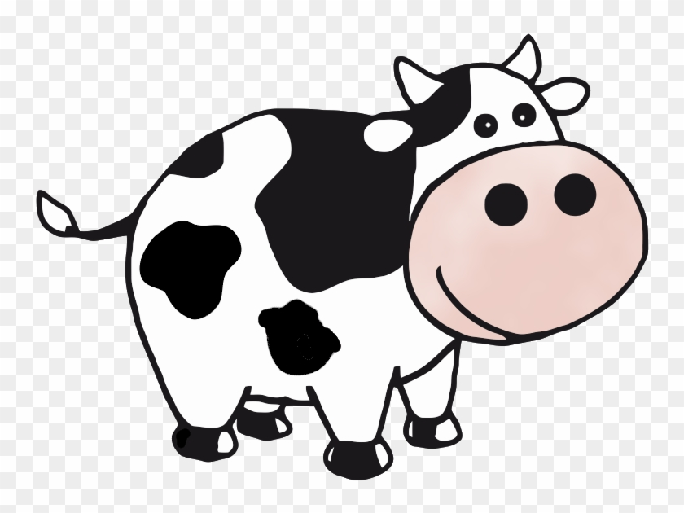

Grace's Book Page
I am copying Sam's website. Thank you Sam. My goodreads page
Books I have read since the inception of the club
- Kobo Abe: The Face of Another / Abe tells the story of a man who is horrible disfigured by a chemical mishap at his place of work, who then creates a mask so he can move around in public without shamefully wrapping himself in bandages. I chose this book because it was compared to Kafka’s writing. It was well written and had some insightful ruminations on identity. Yet it took me a long time to read because it was boring and repetitive. I am glad I pushed through to finish the book because in the last quarter, the plot moves along (he tries sleeping with his wife while in his disguise). I’m going to try another book by this author and see if it keeps my attention more. 3/5
- Rachel Cusk: Second Place / Cusk’s newest book does not disappoint. It is told from the perspective of a woman over the course of a summer where she lives with her husband, daughter, and daughter’s boyfriend in her house and an artist and his companion in their guest house. Cusk weaves in meditations on the ambivalent and complicated types of relationship we all have. This book has many more exclamation points than I remember the author using before. I might reread some of her other works because I was reminded how enjoyable they are. 5/5
- Kazuo Ishiguro: Klara and The Sun / Set in the future where children have robot human-like “Artificial Friends”, this book has an exciting premise. The book is gripping in the beginning, as its told from the perspective of an Artificial Friend, but fails to go beyond mostly cliche ideas with the common trope in sci fi of simply “robots are like humans now”. The plot structure is also a bit formulaic for my taste. There are some twists, but it’s not an especially exciting novel. There are some touching moments, but it’s not an especially moving novel. Ishiguro has written a couple of my favorite books (The Unconsoled and The Remains of the Day), so I have much higher standards for him. He also won the Nobel Prize of Literature, for crying out loud. 2.5/5
- Katherine Angel: Tomorrow Sex Will Be Good Again / Angel explores current conversations around consent, desire, and pleasure from a nuanced feminist perspective. I personally agree with most of what the she posits; it’s a brief book that does the valuable work of articulating these ideas, but it doesn’t offer anything too groundbreaking. 4/5
- David Graeber: The Utopia of Rules / Graeber wows again in this collection of essays on the topic of bureaucracy. Though the arguments are sometimes winding or seem to double back on themselves, Graeber gives insightful analysis on how and why bureaucracy has come to pervade our lives. It is a pleasure to read with some laugh out loud moments along with interesting facts about hierarchies of angels and other historical tidbits. 5/5
- Ocean Vuong: On Earth We're Briefly Gorgeous / Though a touching portrait of human struggles including intergenerational trauma, homophobia, and poverty, Vuong ultimately falls short of his goals in this work. Labeled as a “novel” yet clearly an iteration of the current trend of “autofiction”, there isn’t a coherent plot, which could be fine, but there’s not much else for readers to grab onto. The ending devolves into bad poetry. 1/5
- Sharon Traweek: Beamtimes and Lifetimes / Traweek takes us on a journey to the high energy physics world through the eyes of an anthropologist. The most enjoyable parts are when she gives us glimpses into the details i.e. when she describes how physicists dress :) I enjoyed her chapter about how physicists are trained (though now a postdoc sounds very frightening). Worth reading but not groundbreaking (to us). 3/5
- DH Lawrence: The Rainbow / Tracing a few generations in the rural UK in the early twentieth century, The Rainbow shines a light on divisions along gender, class, and family lines. Unfortunately when Lawrence moves to the next generation, he abandons the previous (even if they’re still alive). So, we miss the chance to see interactions among generations in a meaningful way. The book can be a little boring. 3/5
- Kazuo Ishiguro: When We Were Orphans / Another fabulous work by Ishiguro. Mysterious disappearances, international intrigue, weird romantic/sexual tension, war, it has it all. The ending is a little far-fetched which places it more in the fantastical “beach read” category for me, rather than with some of Ishiguro’s masterpieces. 4.5/5
To read list
- Isabel Allende: The House of The Spirits